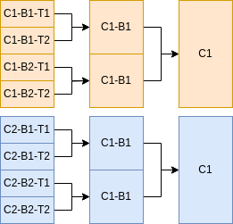

Sample File Setup
In Hich, a sample is a set of key-value attributes that influence how Hich will process a specific input data file. Hich assembles the description of a sample from user inputs, such as a sample file, params file, and command line arguments. Command-line parameters control execution and can specify samples for simpler workflows. The sample file specifies samples for more complex workflows. The params file allows defining sample attributes applying to all samples, as well as describing how to aggregate and call features over samples.
Hich might use the following sample file:
condition |
biorep |
techrep |
fastq1 |
fastq2 |
assembly |
aligner |
alignerIndexDir |
alignerIndexPrefix |
restrictionEnzymes |
fragmentIndex |
genomeReference |
chromsizes |
|---|---|---|---|---|---|---|---|---|---|---|---|---|
Formaldehyde+DSG_DdeI_and_DpnII_HFFc6 |
1 |
1 |
vignettes/akgol2021/downsampled/Formaldehyde+DSG_DdeI_and_DpnII_HFFc6_BR1_TR1_R1.fastq.gz |
vignettes/akgol2021/downsampled/Formaldehyde+DSG_DdeI_and_DpnII_HFFc6_BR1_TR1_R2.fastq.gz |
hg38 |
bwa-mem2 |
resources/hich/bwa-mem2/bwa-mem2/index |
hg38_noalts |
DdeI,DpnII |
resources/hich/fragmentIndex/hg38_DdeI_DpnII.bed |
resources/hich/genomeReference/GRCh38_no_alt_analysis_set_GCA_000001405.15.fasta.gz |
resources/hich/chromsizes/hg38.sizes |
And combine it with parameters specified in a params file like params/onerep_bulk.yml to create a hashmap describing all the attributes necessary for the sample to be processed correctly by Hich. It is not necessary to understand the implementation of Hich in detail to use the software, but it may be helpful to see an example of part of the hashmap Hich produces by combining the sample file above with the params file to produce a complete description of how the sample must be processed.
[id: "Condition1_1_1", condition: "Condition1", biorep: "1", techrep: "1", fastq1: "data/c1_r1.fq.gz", fastq2: "data/c2_r2.fq.gz", assembly: "hg38", aligner: "bwa", retrictionEnzymes: "DdeI,DpnII", bwaFlags: "-SP5M", minMapq: 30, ...]
A sample can represent a technical replicate, biological replicate, or a condition. Input samples are typically defined in a sample file, although they can also be specified at the command line for convenience in simple workflows. When samples are subjected to an aggregation protocol (including downsampling, merging, or deduplication), a new sample based on them is automatically created by Hich. Hich can be configured in the params file to retain the original samples or drop them and carry on with just those created by aggregation. See that section for details.
The sample file
The sample file is a columnar, typically tab-delimited (.tsv) file We can break down the set of frequently used sample file columns into groups of related columns. These are not all required, for several reasons. Some, like biorep, techrep, and aligner are often set by default using the params file. The reference files can often be auto-generated by Hich based on the processing columns. Some data inputs do not require certain reference files, such as when the data input is a pairs file or contact matrix, or when the data was generated from assays that use nuclease rather than restriction enzymes, like micro-C.
In the sample file, attribute names are specified as case-sensitive column headers. Blank column headers are not allowed.
ID columns
Column names: condition, biorep, techrep, and optionally id
All samples must have a unique id attribute. Samples typically have a condition, biorep, and techrep parameter. The included params files apply the value “1” to both the biorep and techrep parameter if missing. No default is applied to condition. Whether or not samples will be processed correctly by Hich if these columns are missing depends on the aggregation profile(s) specified, if any. It is recommended to give biorep and techrep a value even if the experiment does not actually include any replicates. Special characters should be handled correctly in most cases, although to be on the safe side it is a good idea to choose names that avoid special characters used in bash such as “/” and “*”.
If an id is not explicitly specified for a sample, Hich will assign it the id [condition]_[biorep]_[techrep]. For example, a sample with condition “C1”, biorep “1” and techrep “1” would be auto-assigned the id “C1_1_1”. Alternatively, the user can put an id column in the sample file and give the sample whatever ID they choose as long as all samples have distinct IDs. The sample id is used as the filename prefix for most of Hich’s outputs, but the input files may have arbitrary names and be located anywhere on the filesystem. Aggregate profiles, described in the params file documentation, also add the aggregate profile name as a suffix, like *[condition]_[biorep]_[techrep]_[aggregation_profile]”.
For samples with a common aggregateProfile name (discussed in more detail in the params file documentation) where the mergeTechrepsToBioreps flag is set to true, techrep-level samples with matching biorep and condition will be merged to a biorep-level sample. Similarly, if mergeBiorepsToConditions is true, samples with matching condition will be merged to a condition-level sample. Below is an example of 8 input technical replicate samples. If an aggregateProfile defines the mergeTechrepsToBioreps and mergeBiorepsToConditions parameters, then 4 biological replicate samples and 2 condition samples will be created and processed in parallel along with the 8 input technical replicates.
|
 |
Data columns
Column names: fastq1, fastq2, bam, pairs, mcool, hic
Hich can ingest intermediate data formats as well as fastq reads. It is safest to either submit plaintext fastq and/or pairs files, or to have them gzipped using the suffix .gz or .gzip, with pbgzip preferred for .pairs format. The input data files should be listed under the appropriate column name. If different samples are starting at different stages (i.e. some are starting with fastq files, others with bam files), simply include both the fastq1, fastq2 and bam columns and put the path to the data file in the appropriate column for that sample, leaving the unneeded column values blank.
The pairs column is for files in 4DN .pairs format. Note that Hich relies heavily on pairtools for certain processing steps, which uses the column names chrom1 and chrom2 as opposed to chr1 and chr2 designated in the .pairs spec. Hich has not been tested for compatibility with using chr1 and chr2, so using chrom1 and chrom2 is recommended.
The hic column is for files in the Aiden Lab’s .hic format <https://github.com/aidenlab/hic-format>. The mcool column is for files in Open2C .mcool format <https://cooler.readthedocs.io/en/latest/schema.html#multi-resolution>.
This example builds on the previous one, demonstrating how data at the fastq level might be combined with data that has been pre-aligned to bam format.
condition |
biorep |
techrep |
fastq1 |
fastq2 |
bam |
|---|---|---|---|---|---|
Condition1 |
1 |
1 |
data/c1b1t1_r1.fq.gz |
data/c1b1t1_r2.fq.gz |
|
Condition1 |
1 |
2 |
data/c1b1t2_r1.fq.gz |
data/c1b1t2_r2.fq.gz |
|
Condition1 |
2 |
1 |
data/c1b2t1_r1.fq.gz |
data/c1b2t1_r2.fq.gz |
|
Condition1 |
2 |
2 |
data/c1b2t2_r1.fq.gz |
data/c1b2t2_r2.fq.gz |
|
Condition2 |
1 |
1 |
data/c2b1t1.bam |
||
Condition2 |
1 |
2 |
data/c2b1t2.bam |
||
Condition2 |
2 |
1 |
data/c2b2t1.bam |
||
Condition2 |
2 |
2 |
data/c2b2t2.bam |
Processing columns
Column names: assembly, aligner, restrictionEnzymes
The assembly column is the name of the genome reference used, like “hg38”, while a URI to a file on the local machine or on the web where the genome reference is stored goes in the genomeReference column, described in the next section. See the page on building reference files for information on how Hich can automatically and non-redundantly retrieve and build needed reference files, including the genome reference, chromsizes file, aligner index, and fragment index.
The aligner column can take on one of three values: bwa, bwa-mem2, or bsbolt. The BWA aligner is slower but requires less memory to index and run. The BWA-MEM2 aligner produces near-identical outputs much more quickly, but requires more memory to index and run. The BSBolt aligner is a BWA-based aligner and methylation caller for reads from a deaminating assay such as bisulfite conversion.
The restrictionEnzymes column describes the restriction enzymes (if any) used in the Hi-C digest. Hich recognizes REBASE enzyme names. For multi-enzyme digests, give a comma-delimited list of enzyme names such as DdeI,DpnII.
This example shows two experimental conditions, one nuclease-based digest (no entry in restrictionEnzymes) aligned to hg38 with the bwa aligner, the other a bisulfite-converted double restriction digest aligned using bsbolt to mm10.
condition |
[…] |
assembly |
aligner |
restrictionEnzymes |
|---|---|---|---|---|
human_microc |
hg38 |
bwa |
||
mouse_methyl_re |
mm10 |
bsbolt |
DdeI,DpnII |
Reference file columns
Column names: genomeReference, chromsizes, alignerIndexDir, alignerIndexPrefix, fragmentIndex
These columns specify URIs (local paths or web urls) to reference files that are necessary for certain sample processing steps. If a sample’s input data is preprocessed beyond the step at which the reference file is needed, then it can be left out for that sample. These columns can be entirely left out if not needed for any samples. See the page on building reference files for information on how Hich can automatically and non-redundantly retrieve and build needed reference files, including the genome reference, chromsizes file, aligner index, and fragment index.
The genomeReference file is to a FASTA file with reference contigs, which can be downloaded by Hich during the run based on the assembly name for some assemblies. The chromsizes file is a two-column headerless file with chromosome names and sizes, which can be built by Hich from the genome reference. The alignerIndexDir and alignerIndexPrefix columns respectively label the directory in which the aligner’s index files for that genome reference are stored and the filename prefix for the files in the index. For example, if aligner indexes are at hich/bwa/bwa/index/hg38.*, then alignerIndexDir should be hich/bwa/bwa/index and alignerIndexPrefix should be hg38. The fragmentIndex column is a three-column headerless zero-indexed left-closed right-open BED file containing chromosome name, start and end position for restriction fragments for the digest. This is automatically produced and used by Hich to discard reads mapping to the same restriction fragment as likely resulting from undigested chromatin.
If unspecified, Hich will attempt to create these files and will hard-link them in resources/hich under subdirectories with sensible names.